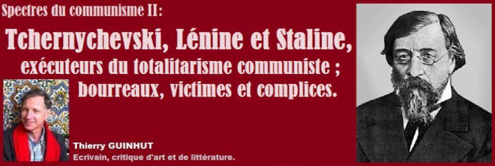
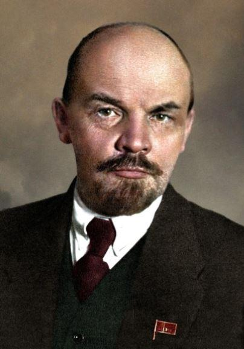
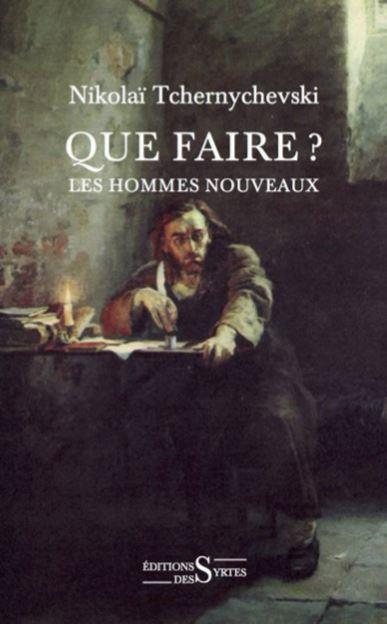
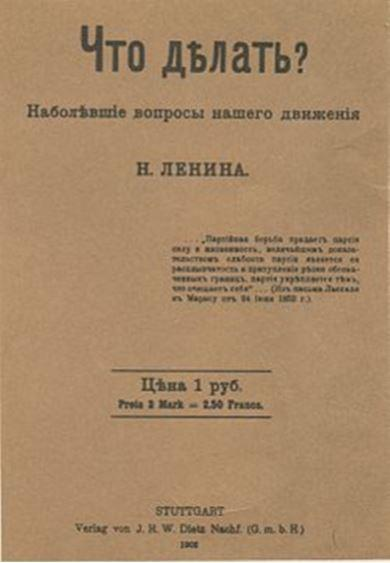
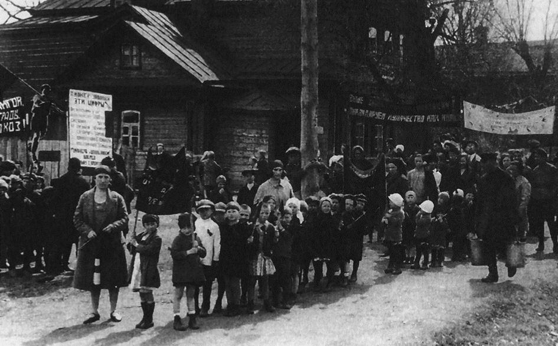
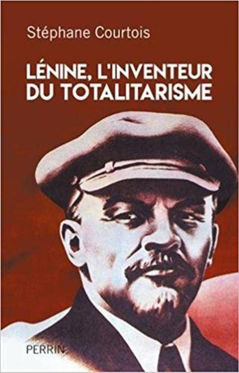
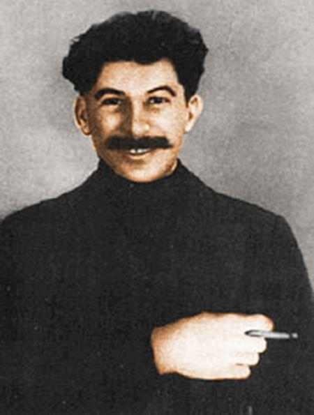
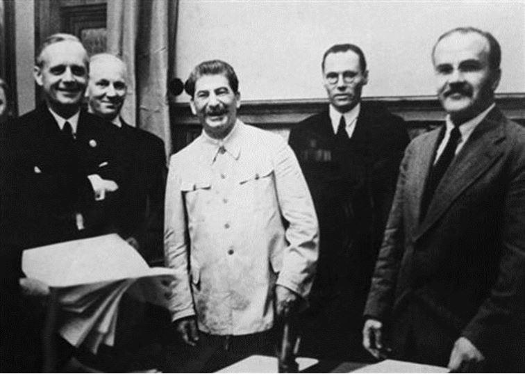
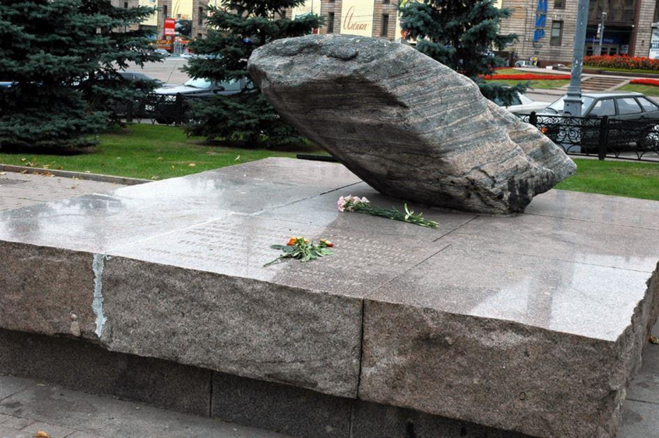
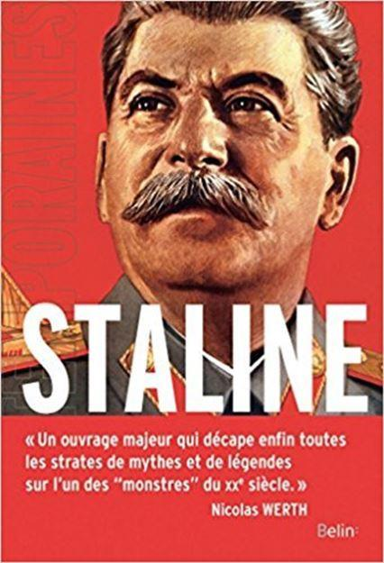

Spectres du communisme II : Tchernychevski, Lénine et Staline, exécuteurs du totalitarisme communiste ; bourreaux, victimes et complices
par Thierry GUINHUT

Si Marx est le théoricien du totalitarisme1, quoique sans les perspectives génocidaires de ses séides, Lénine, lecteur de Tchernychevski, en est l’exécutant, Staline le continuateur impeccable. Plutôt que de pratiquer la déculpabilisation, Stéphane Courtois montre combien le second est l’impitoyable dictateur et mentor du plus efficace du trio maléfique. Lénine en effet ne jurait que par un monde rationnel, d’où l’on aurait arraché les croyances religieuses, les traditions, les créations artistiques, lavé de toute spiritualité et libre arbitre, y compris au prix de sang et du goulag, le monde du communisme. Il est bien, selon Stéphane Courtois, Lénine, l’inventeur du totalitarisme, quand Staline, selon Oleg Khlevniuk est son exact descendant et tyran titanesque aux dizaines de millions de morts ; assistés, outre les bourreaux et les victimes inventoriés par Thierry Wolton, d’une pléthore de « complices ».
Loin de se contenter d’affirmer cette implacable paternité totalitaire, le biographe Stéphane Courtois la prouve d’abondance. Certes nous n’étions pas niais en la matière, surtout depuis la publication en 1997 du Livre noir du communisme2 dont il fut l’un des auteurs. Mais, grâce à l’ouverture des archives russes, l’abondance des pièces portées au procès fait de ce scrupuleux réquisitoire la rigoureuse prémisse d’une condamnation définitive au fronton de l’Histoire. Consultant autant les historiens que les Œuvres complètes de son sujet d’étude (« gangue idéologique et logorrhée polémique »), Stéphane Courtois, dans son Lénine, l’inventeur du totalitarisme, s’est ainsi attaché à définir les « nœuds » qui ont mené Lénine au sommet du pouvoir totalitaire.
Vladimir Ilitch Oulianov, dit Lénine, né en 1870, eut droit à une enfance privilégiée, puis une « adolescence fracassée » par la condamnation à mort de son frère terroriste. Studieux, il se montrait volontiers tyrannique : « Il était l’incarnation de l’hobereau sans cœur que son gouvernement devait un jour détruire ».
Il fut profondément influencé par le roman que Nikolaï Tchernychevski écrivit dans les bagnes tsaristes (les victimes du goulag n’eurent pas cette liberté), Que faire ? Les hommes nouveaux, dont les héros, Vera et Rakhmetov, justifient la violence politique rédemptrice, un en mot : la tuerie. C’est un ouvrage didactique, lourd à souhait, emphatique, un catéchisme manichéen du parfait révolutionnaire communiste, qui mérite d’être néanmoins parcouru, sinon lu, tellement il fut symptomatique et formateur. Le roman s’achève en une acmé utopique, un « songe » plus exalté que L’Utopie de Thomas More3, décrivant un « royaume parfait », communautaire à souhait, qui fait cependant dresser les cheveux sur la tête de tout amant des libertés individuelles et de ce libéralisme qui permit les progrès qu’interdit le communisme.
Son auteur, haineux de tout ce qui est bourgeoisie européenne, libéraux, capitalisme, propriété privée, appelait les paysans à la révolte violente et assassine pour édifier une utopie, rêvant de leaders idéologiques charismatiques.
Ne restait plus que l’action de l’un de ces derniers. Elle fut d’abord secrète. Mais, pour « activités révolutionnaires », Lénine fut en mai 1897 envoyé en exil forcé à Chouchenskoïe, en Sibérie. Là, il vécut dans un confort familial et une liberté de correspondre, de chasser et d’écrire que les millions de déportés ultérieurs du goulag auraient pu lui envier. Et quoiqu’il y reçût Nadejda qui deviendra sa femme, il parut toujours rester aussi chaste que Robespierre ! Pourtant il fonda plus tard un « ménage à trois »…
Il est le représentant de cette intelligentsia qui aspire au communisme et réclame « une révolution sanglante et impitoyable », inspirée par la Terreur de la Révolution française et de son « populicide vendéen ». Non sans glaciale conscience : « peut-être pour longtemps il n’en sortira qu’une oppression plus grande encore que celle que nous connaissons. Qu’importe ! » Outre le « credo marxiste », la foi religieuse en un avenir radieux est patente dans un autre titre qui inspira Lénine : le Catéchisme du révolutionnaire de Netchaïev, qui prônait la tabula rasa, l’union avec les « brigands » et enseignait une marche à suivre totalitaire sans pitié.
Ce qui aura pour conséquence la publication de Que faire ? en 1902, sous le pseudonyme de Lénine (venu du fleuve Léna), « texte fondateur du style totalitaire », dans lequel le Parti est le seul moyeu de la révolution et de la société, et le ramassis d’une « violence maniaque », prévoyant la liquidation des « membres indignes », selon les propres diatribes du dictateur du prolétariat. La route est tracée : « la suppression de la propriété privée des moyens de production, le régentement de l’économie par une planification généralisée et centralisée, et la suppression de la libre circulation des marchandises, qui allaient provoquer une ruine très rapide », souligne Stéphane Courtois.
La révolution avortée de 1905 fut, après la Commune de Paris, une nouvelle répétition générale. Financé par des captations d’héritage et par le « grand banditisme » aux mains de Staline, Lénine étend son parti bolchevik. Tout en rédigeant des « pensum » prétendument philosophiques et bourrés d’injures, il crée en 1912 le quotidien La Pravda (la Vérité) qui devint fameux. Le portrait de l’idéologue, du fanatique religieux, de l’agitateur féroce et enferré dans « des querelles intestines » est sans concession. Retiré en Suisse pendant la Première guerre mondiale, il découvre et fait sien De la guerre de Clausewitz. Il proclame la guerre civile pour le socialisme et projette « d’exterminer » les troupes de la bourgeoisie.
Ce qui aurait pu rester un délire solitaire, groupusculaire, allait se concrétiser. La guerre russo-allemande, catastrophique, puis l’effondrement du régime tsariste retranché sur son despotisme, précipitent la révolution. Emmenés par les Allemands, qui avaient intérêt à voir la Russie se déliter, Lénine et ses comparses rejoignent Petrograd, en avril 1917. L’impéritie du gouvernement Kerenski, les violences paysannes et soldatesques, la déréliction économique, « la passion égalitaire », « le désir de vengeance sociale, la soif de pillage et bientôt le goût du sang », tout conspire au favorable désordre.
Dès le putsch d’octobre 1917 (le 6 novembre russe), avec le concours de Trotski et de la « populace », de 6000 gardes rouges, Lénine « inaugurait le premier régime totalitaire de l’Histoire » et « le communisme de guerre ». Le meurtre des opposants s’ajoute à celui de la liberté de la presse, le pillage des banques et de la propriété foncière privée à celui de la paysannerie. Suite à l’abandon de la guerre contre l’Allemagne, aux prix de lourdes pertes territoriales et économiques, il est le leader incontesté des Bolcheviks, de la Tcheka, chargée de la police politique, et de l’Armée rouge, chargée de la guerre civile, crées en décembre 1917. Le Parti pratique la captation de toutes les richesses économiques et le monopole sur la presse et les transports, conformément aux mesures du Manifeste communiste de Karl Marx4. En janvier 1918, l’Assemblée élue est définitivement balayée et passée par les armes. Lénine ordonne en 1918 l’assassinat de toute la famille des Romanov, ce qui déchaine la guerre civile entre rouges et blancs (8 millions de victimes) ; il enferme des opposants en asile psychiatrique. En 1919, c’est l’extermination des Cosaques du Don, entre autres « fleuves de sang ». En 1921, il interdit les fractions dans le Parti Bolchevique, balayant les dernières poussières de démocratie. En 1920 apparait le système concentrationnaire du goulag. En 1922, il arrête des milliers d’intellectuels, il mate les paysans au moyen d’une gigantesque famine (5 millions de morts), contraint les ouvriers au « travail forcé ». Lançant le fameux cri : « Mort aux koulaks ! », il mène un véritable « génocide de classe ». Grâce au rationnement et à « la légalisation de la terreur sanglante », la répression de masse ne connaîtra plus de trêve. « Un modèle bientôt transposé par Mussolini et surtout par Hitler, et porté à une quasi-perfection par Staline, Mao et Pol Pot », précise Stéphane Courtois.
La tyrannie léniniste dépasse infiniment l’autocratie tsariste. En témoigne la Tcheka, cette délicieuse police politique qui, à partir de décembre 1917, permit à 140 000 personnes de périr sous la Terreur rouge5. Se mettent en place un monopole politique, idéologique et économique, ruinant la Russie, à peine écorné par la N.E.P, cette « Nouvelle Politique Économique » légèrement moins étatisée, revanche de la réalité sur l’idéologie, et coup dur pour le fanatisme léniniste, de plus humilié par l’aide alimentaire américaine : un « retour honteux au capitalisme ». Bien plus qu’un communisme de guerre contre les Blancs nostalgiques du tsarisme, les Rouges de Lénine ont mis en place un communisme totalitaire, ce qui est un pléonasme, car qui dit mise en commun signifie agonie de la liberté individuelle. De 1918 date bien « l’invention du système concentrationnaire soviétique ».
En une belle formule, Stéphane Courtois fustige le communisme : « Par une ruse de l’histoire, le parfait communiste serait un prédateur : sauf que son matériel ne serait pas financier, mais humain » ; ce qui rejoint les analyse de Sloterdijk sur les « banques de la colère6 ». Ainsi, notre biographe montre son intelligence politique.
Non seulement passionnante, la biographie de Stéphane Courtois, qui est également un tableau des mouvements révolutionnaires et de la Russie, n’a évidemment rien d’une hagiographie, mais est salubrement critique. Quand les faits démentent la théorie marxiste de Lénine, Lénine les efface d’un trait de plume, et, « comme d’habitude, Vladimir pérorait sur le capitalisme et le marché sans avoir la moindre idée de ce que cela signifiait dans la vie économique, mais l’essentiel était d’asseoir sa réputation ». Il ne tenait aucun compte des progrès scientifiques et agronomiques, était « obsédé par son idée de la crise finale du capitalisme ». Il s’agissait « de contraindre toute une société à vivre selon des règles socialistes, qui, précisément, détruisent les principes de fonctionnement de toute société ».
Avec de telles analyses, outre son abondance factuelle et conceptuelle, Stéphane Courtois dépasse la biographie de Lénine par Hélène Carrère d’Encausse7, classique et cependant honorable. Elle se termine par les attaques cérébrales subies par Lénine dès 1922, par sa mort en janvier 1924, par son embaument et son corps offert à l’idolâtrie des foules ; et par l’ascension de son dauphin…
« Staline n’avait été qu’un élève appliqué de son maître », « un fidèle héritier de son mentor », indique en toute logique Stéphane Courtois, anticipant la lecture du Staline d’Oleg Khlevniuk.
L’engagement révolutionnaire et délinquant d’Iosif Djougachvili prépare, au gré des circonstances de l’Histoire, l’ascension de celui qui devient Staline, jusqu’à son auréole glorieuse grâce à la victoire soviétique contre l’Allemagne nazie. Mais, loin de lustrer la légende dorée stalinienne, la biographie d’Oleg Khlevniuk n’occulte rien de la tyrannie totalitaire et assassine du maître du Kremlin, auquel trop de générations ont attaché le rêve mortifère de la libération d’un capitalisme honni. Outre la narration strictement biographique, l’historien alterne ses chapitres avec des parties thématiques, attachées à l’explicitation des ressorts du gouvernement installés par un esprit aussi radical que systématique, par un bourreau de travail, par un maître de la terreur obsessionnelle, y compris auprès de ses collaborateurs, mais aussi offrant un regard sur les femmes qui l’entourèrent, ses funérailles, marquées par d’hystériques émeutes…
 Staline en exil en 1915Né en 1878, Staline est un Georgien qui étudie la théologie, et devient séduit par « la nature globalisante, quasiment religieuse du marxisme ». Le jeune homme « exceptionnellement violent », mais aussi « extraordinairement prudent », enchaine les périodes de prison et d’exils sibériens. Le « révolutionnaire professionnel », attiré par Lénine, devient à ses côtés un leader bolchevik. Probablement participe-t-il au hold-up d’un convoi de fonds. En 1917, il dirige la Pravda et devient un des bras droits de Lénine au pouvoir, mettant scrupuleusement en œuvre la politique de terreur. Piètre militaire il contribue à l’échec de l’armée rouge en Pologne ; ce qui lui vaut l’inimitié de Trotski. Mais la rivalité de ce dernier avec Lénine le place au premier rang de la succession, malgré une trouble disgrâce aux derniers jours d’agonie du maître.
À partir de 1927, il triomphe définitivement d’une direction collégiale avec Zinoviev et Trotski, exilé. S’en suivent une politique économique dépourvue de toute cohérence, hors celle de la « guerre contre la paysannerie », la fin de la NEP, un piteux développement industriel en dépit du bon sens, une répression tous azimuts. Jusqu’à l’apogée de la « Grande Terreur » de 1937-1938, contre les « éléments antisoviétiques », avec ses « quotas » d’internements et d’exécutions. Sans oublier les règlements de compte avec les vieux rivaux politiques, réels et fantasmés, y compris au moyen d’accusations pour des crimes qu’ils n’avaient en rien commis, comme lors de l’affaire Kirov.
Malgré les prétendus succès économiques soviétiques, le niveau de vie des citoyens, hors les privilégiés du régime, est resté infâme. De même, l’alimentation est souvent rationnée, parfois inaccessible, jalonnée de queues interminables. En effet, fidèle à son modèle, Staline entérine la collectivisation forcée à partir de 1930, au nom de ces « utopies agraires » que sont les kolkhozes, et emporte 4 millions de personnes à la mort par famine en Ukraine. Seul le retour au « lopin » de terre privé permet de rendre une très relative santé à l’agriculture. Entre les années vingt et cinquante, plus de 26 millions de Soviétiques se voient exécutés, connaissent les camps et la déportation, à la merci des ordres directs du dictateur, et non, comme l’on a tenté de l’en disculper, d’Iejov et des cadres locaux. Du coup les industriels compétents et la hiérarchie de l’Armée rouge sont férocement décimés.

Signature du Pacte germano-soviétique en août 1939
Le pacte germano-soviétique de 1939 n’ouvrit cependant pas assez les yeux sur la collusion entre totalitarismes. La partition de la Pologne entre l’Allemagne et l’URSS en fut le résultat, ainsi que l’annexion des pays Baltes et de la Biélorussie. L’invasion de la Finlande en 1940 s’enlisa. Un tel échec convainquit Hitler d’envahir le continent stalinien. Et malgré la légende du chef de guerre glorieux, l’incompétence et les erreurs stratégiques de Staline à la veille et pendant la Seconde Guerre mondiales furent catastrophiques : « un armement de piètre qualité et des chiffres gonflés », des effectifs nombreux mais inexpérimentés, grevés par les épurations, les ripostes erratiques. Ce qui aboutit à l’anéantissement du plus gros de l’armée, à la prise de Kiev, de Sébastopol, à l’encerclement de Leningrad et de Stalingrad, à la menace sur Moscou. On se demande si, sans l’aide matérielle des alliés occidentaux, l’URSS s’en fût sortie, et si cette aide fut une bonne idée…
À partir de novembre 1942, la victoire de Stalingrad, le désencerclement de Leningrad marquèrent le tournant qui conduisit à l’éradication de l’Allemagne nazie, grâce à la supériorité démographique russe ; et bien sûr à l’ouverture du front ouest jusqu’au débarquement de juin 1944. Ce qui permit à Staline de reprendre la répression contre les minorités ethniques, outre les collaborateurs pro-allemands ou prétendus tels. S’en suivirent les exactions de l’Armée rouge sur les populations prétendument libérées et enrôlées sous le joug de régimes communistes satellites. 27 millions de Soviétiques périrent lors de cette guerre, sans compter les blessés et les famines qui s’en suivirent. Et l’on commençait à savoir que les « esclaves du capitalisme » bénéficiaient d’un niveau de vie incomparable !
Les dernières années du stalinisme ne furent pas en reste dans le flot des répressions, des purges, des campagnes contre les intellectuels, les écrivains, les médecins, les Juifs… Sept millions de Soviétiques allèrent, entre 1946 et 1952, peupler le « réseau tentaculaire » des goulags. Les autres, à rebours de la propagande exaltant le « petit père des peuples » et de la « stalinomania » officielle, hors les privilégiés urbains, faisaient la queue devant des magasins souvent vides, vivaient au cœur d’une crise du logement chronique, travaillaient sous la pire contrainte… Seule la mort du dictateur, en 1953, « ouvrait la porte aux changements que la société appelait depuis longtemps de ses vœux » ; la terreur allait pouvoir s’assagir, non disparaître. Il fallut en effet attendre la fin des années quatre-vingts pour voir s’effriter d’un coup le communisme. Aussi étonnant que cela puisse paraître, une « nostalgie de l’utopie sociale qu’a été le stalinisme » perdure encore en Russie, voire ailleurs. Si les frustrations d’aujourd’hui les rendre possibles, l’ignorance de l’Histoire, exploitée par des démagogues, a de beaux jours devant elle

Mémorial en l’honneur des victimes du Goulag, Moscou
En cohérence avec Stéphane Courtois, même s’il ne pratique pas comme lui les rapprochements avec les autres totalitarismes, Oleg Khlevniuk fait de sa biographie un réquisitoire judicieusement argumenté et documenté contre Staline et le communisme. Biographie toujours allante, palpitante, malgré les citations des discours et notes de son sujet, fastidieuses, mais nécessaires. Sachons qu’il est l’un des maîtres d’œuvre d’une Histoire du goulag stalinien, en sept volumes. Aussi Oleg Khlevniuk, s’appuyant également sur les archives soviétiques, est-il bien placé pour dresser la vénéneuse statue du titanesque Staline aux pieds de laquelle gisent des dizaines de millions de vies humaines sacrifiés et errent bien d’autres, privés de liberté économique, intellectuelle et politique. Le mythe du « petit père des peuples » est définitivement caduc.
Tous deux fanatiques et paranoïaques, tous deux d’une cruauté sans faille, tous deux idéologues forcenés, tous deux morts des suites d’artériosclérose, Lénine et Staline sont bien les exécutants jumeaux du totalitarisme. Ils ont suivi jusqu’à leurs ultimes conséquences les « mesures » préconisées par Le Manifeste communiste. On n’ajoutera guère foi à l’argument selon lequel Lénine se méfiait de Staline dans son testament : ne se défiait-il pas de tous ? Sur le podium de la tyrannie rouge qui ne fit que s’adoucir après le rapport Khrouchtchev dénonçant le stalinisme, sont hélas statufiés trois monstres par leurs biographies scrupuleux et par les murs de sang de l’Histoire.
« La déception que nous a infligée l’évolution de Marx vers Lénine, de Lénine vers Staline et de Staline vers le goulag exige de nous à la fois la liquidation du marxisme comme système idéologique et la libération de Marx comme penseur », prétend fallacieusement Paul Ricœur[8]. Outre que Lénine fut le créateur du goulag, nous nous libérons volontiers de Marx, dont la doctrine était celle du communisme de guerre, rigoureusement appliqué dans le sang par Lénine puis Staline. Ancien maoïste, Stéphane Courtois est la preuve que par la raison et l’étude l’on peut briser ses œillères idéologiques, et se défaire de l’illusion communiste, ce crime contre la liberté et la vie individuelles. L’Historien doit à la fois être scrupuleux devant les faits et les concepts politiques, et à la fois un passionnant biographe, talent que Jonathan Sperber (pour Marx), Stéphane Courtois et Oleg Khlevniuk partagent également. Mais un autre totalitarisme n’a-t-il pas exécuté les commandements de Karl Marx ? Outre qu’Hitler, comme Mussolini, était et se proclamait socialiste, ses « armées de travail obligatoires » furent celles des Juifs et autres prisonniers politiques.
Autre triptyque en forme de réquisitoire, après les biographies consacrées à Marx, Lénine et Staline, voici le monumental et méticuleux travail de Thierry Wolton titré Une Histoire mondiale du communisme. Il se décline en trois entrées : I Les bourreaux, II Les Victimes, III Les Complices. Ce dernier volume, également assis sur une impressionnante et fascinante documentation est probablement le plus original. Il y dénonce avec justesse le soutien, souvent inconditionnel, des partis communistes qui essaimèrent sur le globe, la complaisance des gouvernements occidentaux, l’enthousiasme et l’indulgence coupables des intellectuels et écrivains, qu’ils s’appellent Sartre, Aragon ou Neruda, par exemple. Au choix, l’on est « aux ordres de Moscou », l’on pratique la « cécité volontaire ». Thierry Wolton ose, et avec raison, employer la formule du « négationnisme communisme », qui n’a rien à envier à sa consœur nazie ; il se gausse du mythe du « socialisme à visage humain », de la « maolâtrie » des années 68, du « pèlerinage à Cuba[9] », toujours d’actualité, du fieffé communiste Salvador Allende qui eut la chance paradoxale d’être évacué par un dictateur de droite de façon à devenir un mythe et « évite d’avoir à tirer les leçons sur les ratés de cette voie nouvelle vers le socialisme », pour laquelle François Mitterrand eut les yeux de Chimène. Il n’en oublie pas pour autant de dénoncer « l’égalitarisme », qui, soit dit en passant, empoisonne pour longtemps notre société antilibérale. Il est évident qu’il ramène à leur symétrie les totalitarismes nazi et communiste, qui justifient l’élimination, l’un du Juif, au nom de la pureté de la race, l’autre des « ennemis du peuple », au nom de l’avenir radieux. « Tout anticommuniste est un chien », disait en 1961 Sartre[10], ce complice en chef, qu’il qualifie de « compagnon de route du poststalinisme ». On ne doute pas que Thierry Wolton, qui se présente comme un « humble pêcheur de l’Histoire » et revendique, outre l’anticommunisme, l’antifascisme et l’anti-islamisme, ironiserait sur « la culture communiste[11]. S’il ne manque à ces encyclopédique et forts volumes qu’un index, les voici parmi les indispensables, outre de l’Histoire, mais de la philosophie politique. Saurons-nous ainsi assez bien comment nous pouvons être bourreaux, victimes et complices, parfois même les trois à la fois, comment « La Capital et Que faire ? jouant le rôle du Coran », il nous faut encore exercer notre perspicacité sans égards pour les stigmatisations qui ne manquent pas de vider leurs flèches putrides sur « les explorateurs de la vérité », que réclame Nietzsche[12]…
Partager cette page